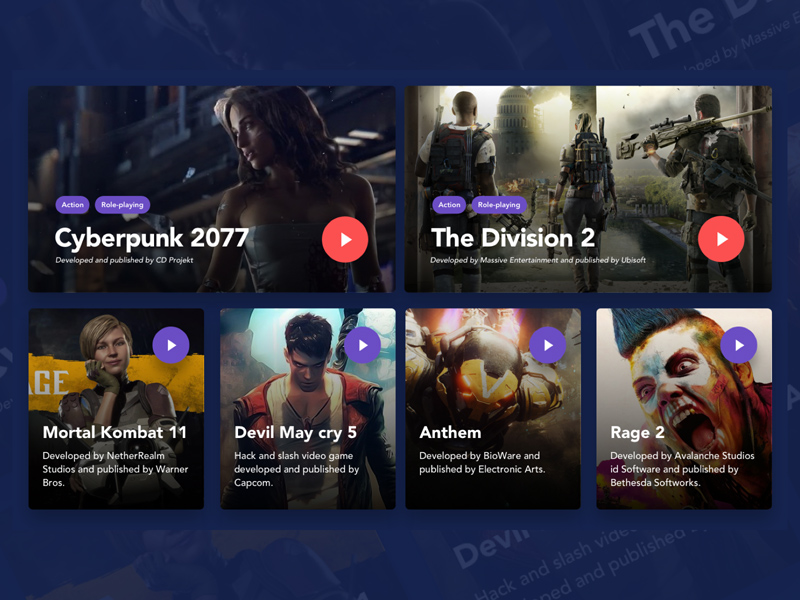

Spring 2026
Golden Hour Along the Coast
These photos inspired this site because they show the kind of light, movement, and natural shapes I like to photograph.
Read MoreCreative Direction
Building a Visual Mood
I wanted this page to feel simple and image-focused, so the layout uses a large photo, soft colors, and readable spacing.
Component Inspiration

This screenshot shows the kind of layout that inspired my component. I recreated it using my own images, colors, and spacing to fit the theme of my site. What I was really interested in was getting something that fit what I wanted to do with my images.